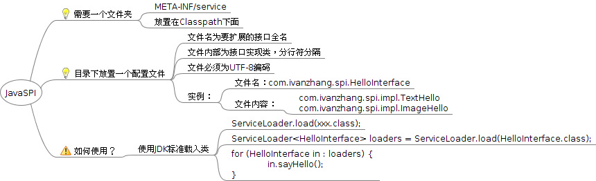

Java SPI 总结
SPI ABC
SPI 代表Service Provider Interfaces, 是一种服务提供发现的机制。JDK中为其提供了ServiceLoader用来加载接口对应的实现。
使用约定

1 |
|
使用例子
- common-logging
common-logging，apache最早提供的日志的门面接口。只有接口，没有实现。具体方案由各提供商实现，发现日志提供商是通过扫描 META-INF/services/org.apache.commons.logging.LogFactory配置文件，通过读取该文件的内容找到日志提工商实现类。只要我们的日志实现里包含了这个文件，并在文件里制定 LogFactory工厂接口的实现类即可。
- jdbc
jdbc4.0以前，开发还需要基于Class.forName(“xxx”)的方式来装载驱动，jdbc4也基于spi的机制来发现驱动提供商了，可以通过META-INF/services/java.sql.Driver文件里指定实现类的方式来暴露驱动提供者。
其他用途：
- Java Database Connectivity
- Java Cryptography Extension
- Java Naming and Directory Interface
- Java API for XML Processing
- Java Business Integration
- Java Sound
- Java Image I/O
- Java File Systems